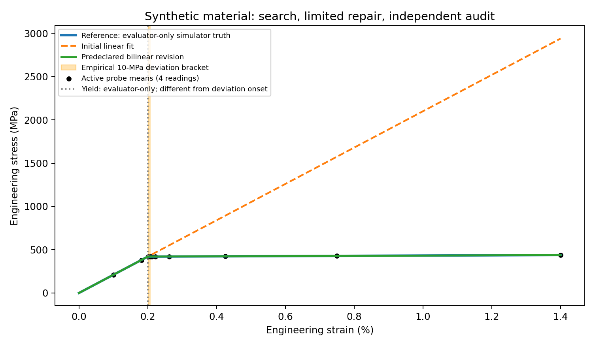
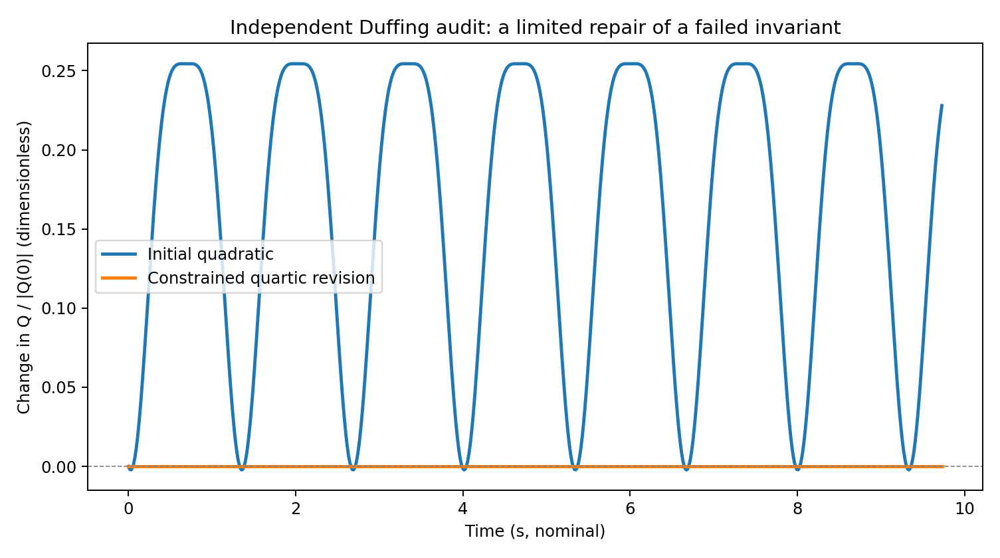
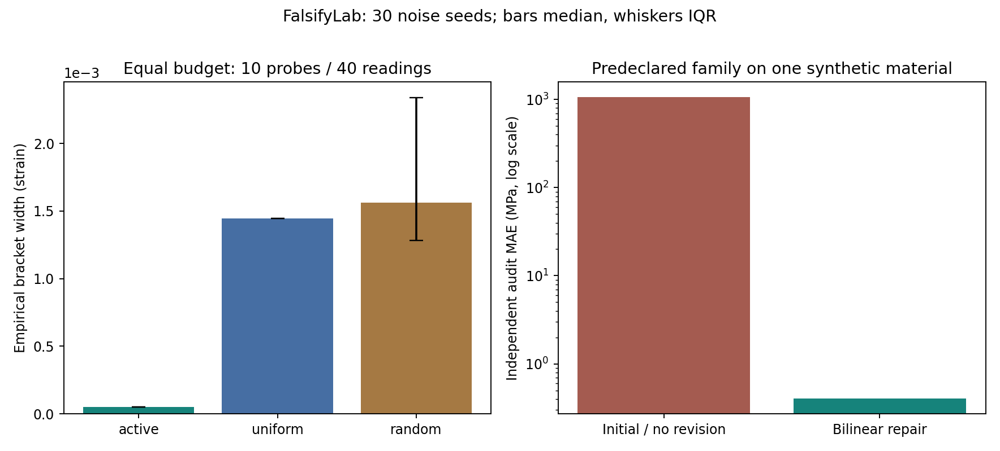

FalsifyLab / executable scientific evidence
Where does
a law stop working?
Fit a plausible relationship. Spend a declared experiment budget trying to break it. Attempt a limited repair, then audit it on independent observations.
Synthetic mechanics and materials · CPU only · No API keys · No new physical-law discovery claimed
01 / materials characterization
A linear fit meets its limits.
A low-strain Hookean model is challenged by a synthetic continuous bilinear response. Ten probes with four readings each locate a threshold-defined deviation onset. The model is revised within a predeclared bilinear family.

30 repeated noise seeds on one simulated material. Shared training: 40 readings. Each policy: 40 probe readings. Shared final audit: 249 readings.
| Policy | Median width (strain) | 25th–75th percentile | Noiseless onset covered | Boundary inconclusive |
|---|---|---|---|---|
| active | 5.07813e-05 | 5.07813e-05–5.07813e-05 | 100.0% | 0.0% |
| random | 0.00156089 | 0.00128135–0.00233667 | 100.0% | 0.0% |
| uniform | 0.00144444 | 0.00144444–0.00144444 | 100.0% | 0.0% |
The 10 MPa operational boundary differs from physical yield. An empirical bracket is not a confidence interval; adaptive bisection exploits a monotonicity prior. Narrow brackets can miss the noiseless target under noise.
02 / nonlinear dynamics
An apparent invariant, a counterexample, a restricted repair.
Q = v^2 + 4.031008 x^2 has 0.592% discovery drift. A fixed 15-condition stress grid exposes failures; a quartic revision is frozen before three new heldout trajectories are acquired.

| System | First holdout drift | Initial audit | Revised audit |
|---|---|---|---|
| harmonic_undamped_control | 0.000% | NOT_REFUTED_UNDER_TESTED_CONDITIONS | NOT_ATTEMPTED |
| duffing_nonlinearity | 22.143% | REFUTED | NOT_REFUTED_UNDER_TESTED_CONDITIONS |
| weakly_damped_negative_control | 7.702% | REFUTED | REFUTED |
The 2% drift threshold is a demonstration heuristic. Surviving finite tests does not prove conservation. The damped control remains refuted after attempted repair.
Controls and robustness
Evidence includes the weak points.

Primary benchmark: 30 seeds. Noise/horizon checks and two solver tolerances are recorded separately. The discovery-only quartic ablation can already succeed in the noiseless oscillator: search is useful for exposing the quadratic failure, but is not necessary for fitting this correctly specified richer family.
03 / the research record
Inspect the evidence.
Each schema-validated trace includes the candidate, raw-data checksums, partition manifest, frozen coefficients, every experiment, costs, counterexamples, independent audit and limitations.
- harmonic_undamped_control JSON · readable trace
- oscillator JSON · readable trace
- weakly_damped_negative_control JSON · readable trace
- materials JSON · readable trace
python -m falsifylab regenerates this report. python -m falsifylab.verify outputs checks saved measurements, frozen predictions and provenance.